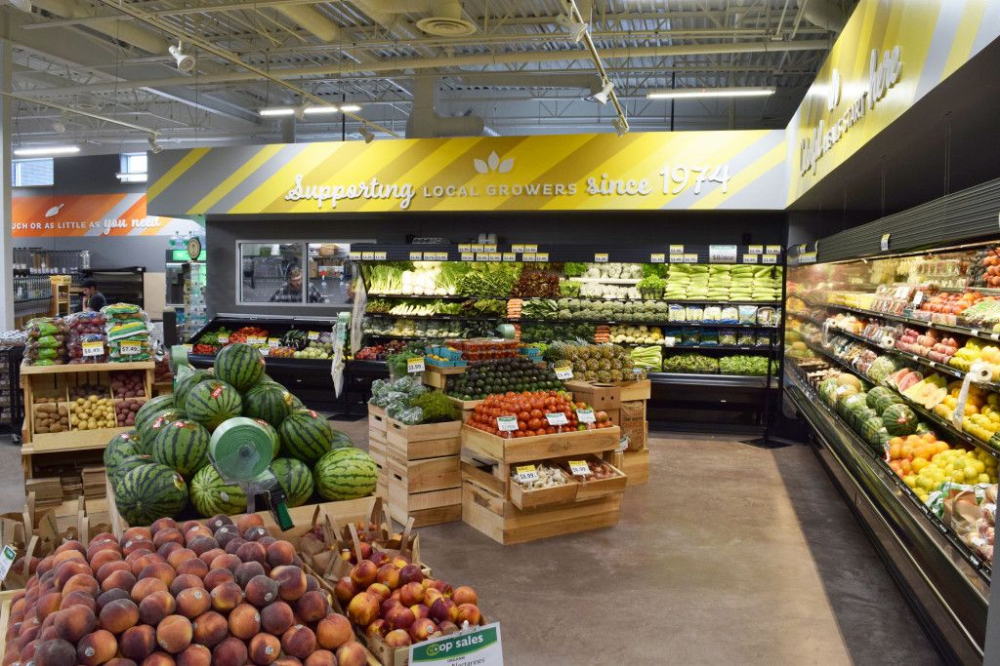
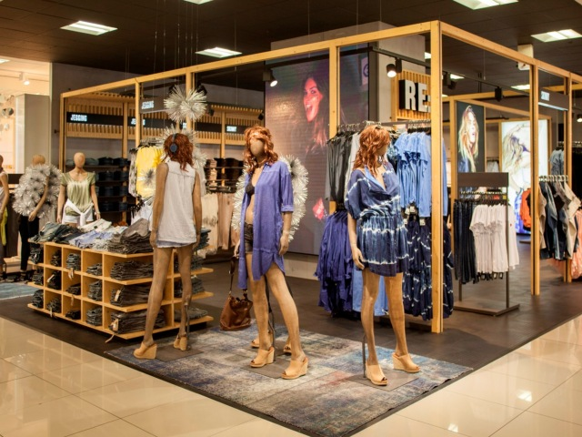
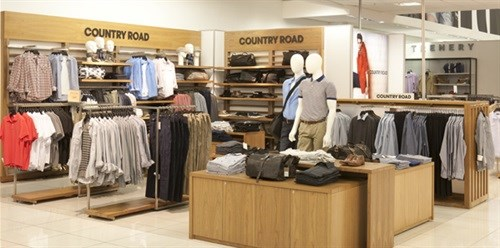

WOOLWORTHS
The first Woolworths store opened its doors to the public in Cape Town in October 1931. And it was founder Max Sonnenberg who captured the public’s imagination with dynamic store policies that set Woolworths apart from its competitors. Three years later, a second branch opened in Durban, with another two in Port Elizabeth and Johannesburg a year later. And since then we’ve been building on our reputation for superior quality, exciting innovation and excellent value FIRST TO OFFER EMPLOYEE BENEFITS Keen to attract and retain the best retail professionals, Woolworths was among the first local retailers to offer employees a pension fund, medical aid and maternity leave. FIRST IN ADVANCING TECH Not just a forward thinking employer, Woolworths was also an early adopter of technology. A lease agreement for the first computer was agreed to with National Cash Registers (NCR) in the late 60s and Woolworths was already using a computerised merchandising system by the early 1970s. FIRST TO INTRODUCE SELL BY DATES This dynamic thinking extends to Woolworths product offering. In 1974, Woolworths became the first South African retailer to introduce ‘sell by’ dates on food packaging. Convenience, too, has long been a watchword at Woolworths - we were the first South African retailer to offer pre-washed lettuce and machine-washable wool clothing to consumers. OUR GOOD BUSINESS JOURNEY In April 2007, we launched our Good Business Journey – a bold plan to make a difference in eight key areas on our journey towards sustainability: Energy, Water, Waste, Sustainable Farming, Ethical Sourcing, Transformation, Social Development and Health and Wellness.
  